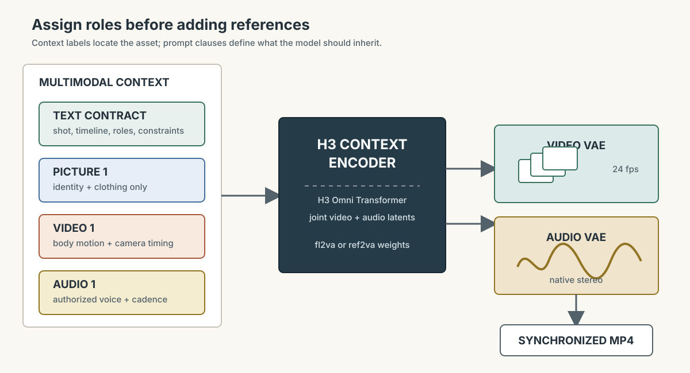

本讲目录
第 22 讲 · MiniMax H3：把参考素材编排成一条声画镜头
资料核验：2026-08-20。 MiniMax 于 2026-07-31 正式发布 H3；ComfyUI 随后提供开放权重的原生 T2V、I2V 与 R2V 模板。本讲不是一张“新模型参数表”，而是一次工作流升级：从“写提示词生成视频”，走向“给每份图片、视频和声音分配明确职责，再生成同步声画”。模型、模板与许可仍在快速变化，安装前请回看文末的一手来源。

1. 它真正改变了什么
传统视频工作流常像后期流水线：先生成无声画面，再分别做配音、拟音、音乐和口型；角色参考、动作参考与首尾帧控制也经常属于不同模型或插件。H3 的设计目标是把这些任务放进同一个多模态上下文：
- 输入可以混合文本、图片、视频和音频；
- 关系由自然语言说明，例如“图 1 只提供人物身份，视频 1 只提供运镜，音频 1 只提供音色”；
- 输出是带原生双声道的音视频，语音、音效与音乐不是事后简单叠上去的三条独立轨道；
- 模式不再只是一串彼此隔离的 T2V/I2V 按钮，但 ComfyUI 仍用三个模板给初学者提供清楚入口。
MiniMax 官方发布页给出的能力上限是最长约 15 秒、最高 2K；当前 ComfyUI 本地开放权重教程却建议先在 768 px 短边、最大约 768×1344、边长为 32 的倍数这一原生画布上工作。模板以 24 fps 输出，时长输入会落到模型的 \(17k+5\) 帧网格，所以界面中的任意秒数不一定对应任意帧数。两句话并不矛盾：官方发布还描述了基模参与的 in-context regeneration；本地模板的稳定起点并不是直接把 Resolution Selector 拉到“2K”。课程实验以下面的本地模板约束为准。
2. 三个模板不是三个近义按钮
| 模式 | 核心节点/权重 | 最适合回答的问题 | 不应拿它做什么 |
|---|---|---|---|
| T2V | MiniMaxH3ImageToVideo 路线；fl2va 权重 |
没有既定角色资产时，先探索场景、镜头与声场 | 用十段形容词强行“锁脸” |
| I2V / FL2V | 同为 fl2va；接 first_frame，可再接 last_frame |
已有关键视觉，想控制起点、终点和中间运动 | 把首帧当风格参考后又要求完全换构图 |
| R2V | MiniMaxH3ReferenceToVideo；独立的 ref2va 权重 |
分开指定身份、风格、动作、运镜或声音 | 不写角色分工，把一堆互相冲突的素材全塞进去 |
这里最容易踩的安装坑是：T2V/I2V 的 fl2va 与 R2V 的 ref2va 不是同一个 diffusion model 文件。 文本编码器、视频 VAE 与音频 VAE 可以共用，但切到 R2V 时必须装对应权重，不能只改节点名字。
3. 四类文件各自负责什么
按 ComfyUI 官方模型仓库 2026-08-13 的推荐量化组合，T2V/I2V 的最小本地包是：
ComfyUI/
└── models/
├── diffusion_models/
│ └── minimax_h3_fl2va_pruned_int8_convrot.safetensors # 约 21.0 GB
├── text_encoders/
│ └── qwen3vl_32b_minimax_h3_nvfp4_awq.safetensors # 约 15.7 GB
└── vae/
├── minimax_h3_video_vae_fp16.safetensors # 约 5.21 GB
└── minimax_h3_audio_vae_fp32.safetensors # 约 0.61 GB
四类文件对应四本账：
| 文件 | 角色 | 换错时最可能看到的症状 |
|---|---|---|
fl2va / ref2va diffusion model |
联合声画潜变量上的生成主干 | 模式不匹配、节点无法执行或输出语义失控 |
| Qwen3-VL 文本编码器 | 理解提示词、参考标签及素材关系 | 指令与参考分工理解变差，或直接加载失败 |
| video VAE | 视频像素与视频 latent 之间编码/解码 | 解码报错、显存峰值或画面异常 |
| audio VAE | 音频波形与音频 latent 之间编码/解码 | 无法得到正常音轨或音频解码失败 |
上述四个文件约占 42.5 GB 磁盘；若还要保留同量化的 ref2va，再加约 21 GB。磁盘占用不是峰值显存，但它已经说明 H3 不是“16GB 卡下载一个 checkpoint 就舒服跑”的级别：扩散主干单文件就超过显存，文本编码器也几乎占满整卡，运行时必然依赖阶段性加载、CPU 内存卸载和较小的时空 latent。
仓库的 nvfp4_awq 文本编码器并不要求 Blackwell GPU；模型卡建议在可用 PyTorch CUDA 13.0 的环境优先试 int8_convrot diffusion model，否则才考虑 fp8_scaled。这台 Win 机在 2026-07-10 的快照是 PyTorch 2.11/cu130，格式条件看起来匹配，但当时的 ComfyUI 仍是 0.22.0，低于 H3 教程要求的 0.30.0。截至 2026-08-20，课程推荐把官方稳定版 v0.33.1 与对应 H3 模板作为安装目标；先升级并让模板完成依赖预检，再谈模型文件。
4. 这台 4060 Ti 16GB 应该怎样开始
把“能打开模板”“能跑出一条”和“能高频迭代”分成三层，不要用一次侥幸运行替代可用性判断。
路线 A：先在 Comfy Cloud 学会语义
官方教程为 T2V、I2V、R2V 都提供 Cloud 入口。它适合先验证提示词结构和参考分工，不需要在本地下载四十多 GB 文件；代价是按服务计费，素材会离开本机，上传前要确认隐私、肖像、声音授权与当前服务条款。
路线 B：本地只装 fl2va，先跑最小镜头
- 备份
user/、自定义节点列表和当前工作流，再把 ComfyUI 更新到当前稳定版（课程快照为 v0.33.1）；0.30.0 只是教程最低门槛，不应把“刚过最低版本”当作完整兼容证书。不要在旧 0.22 环境里手抄新节点。 - 在 Template Library → Video 搜索 MiniMax H3 T2V，让模板弹窗给出当前配套文件；先只装 T2V/I2V 共用的
fl2va组合。 - 使用模板自带的 preview megapixels、短时长、单镜头。固定 seed，只改提示词；先证明端到端声画能输出，再增加像素与帧数。
- 同时记录磁盘读取、系统内存、峰值显存、首轮加载时间与第二轮生成时间。若系统内存持续顶满或反复在 CPU/GPU 间搬运导致迭代不可接受，就停止堆优化插件，转云端或更大显存机器。
- 只有当 I2V 已能稳定迭代，并且你确实需要身份/动作/声音分工时，再下载
ref2va进入 R2V。
本课程没有在这台 16GB 机器上替你声称“实测流畅”。官方开放权重证明它可本地部署，不证明你的具体硬件能以可接受速度跑每种模式。这是一次需要日志与计时表的工程实验。
5. 提示词从“画面清单”升级为“镜头契约”
5.1 T2V：时间、镜头和声音写在同一份脚本里
先写一个镜头，不要一上来塞三次转场：
6-second single shot. A quiet tram stop after rain at blue hour.
The camera slowly dollies toward a woman holding a transparent umbrella.
At 2 seconds she looks up; at 4 seconds the tram light crosses her face.
Audio: light rain in stereo, a tram bell approaching from rear left,
one soft breath, no dialogue, no background music.
Keep the face stable; no cuts; no on-screen text.
这个结构有六个槽位：时长与镜头数 → 场景 → 主体动作时间线 → 镜头运动 → 声音事件与空间位置 → 禁止项。它比“cinematic, masterpiece, 8K”更可检验，因为每句话都能在输出里判定成功或失败。
5.2 R2V：标签只负责寻址，句子负责分工
参考按连接顺序编号。官方文档使用 <Picture 1>、<Video 1>、<Audio 1> 这样的标签；标签本身不会告诉模型“该抄什么”，必须紧接职责：
Use <Picture 1> only for the performer's identity and clothing.
Use <Video 1> only for body motion and camera timing; do not copy its person.
Use <Audio 1> only for the authorized speaker's voice color and cadence.
Create one 6-second medium shot in a rehearsal room.
The performer repeats the motion from <Video 1> and says: "Ready for take two."
Keep the room tone quiet; preserve the face and jacket from <Picture 1>.
R2V 当前文档列出的上限是 9 张参考图、3 段参考视频和 3 段独立音频；ref_image_size=match 会把参考缩到生成分辨率以换速度，max 可保留到 2048 px 短边以争取身份细节，但更慢。上限不是建议量。第一次实验只用“一图 + 一视频”，先验证身份与运动能否解耦。
6. 四轮对照实验：别凭一条最好看的样片下结论
固定 seed、时长、分辨率和基础场景，建立如下实验账本：
| 轮次 | 唯一变化 | 要回答的问题 | 记录指标 |
|---|---|---|---|
| A · T2V 基线 | 只有镜头契约 | 模型能否独立完成动作、运镜和声场？ | 动作完成、声画时点、文字/脸部异常、耗时 |
| B · I2V | 增加首帧 | 首帧提高身份一致性时，是否压低了动作幅度？ | 首帧相似、末帧漂移、动作幅度 |
| C · FL2V | 再增加尾帧 | 两个端点能否被合理连接，还是中段发生突变？ | 端点误差、中段形变、速度连续性 |
| D · R2V | 身份图 + 动作视频，逐句声明职责 | 身份与运动是否真的分开继承？ | 身份、服装、动作节拍、运镜，各自 0–2 分 |
音频单独打四项：对白内容、音色授权与保持、事件时点、左右声场。画面漂亮但台词错、声场反向或参考人物被复制，都不是“整体成功”。每轮至少保留 seed、模板版本、模型文件名、提示词、分辨率、帧数、耗时和输出 MP4；否则第二天无法知道改进来自哪一个变量。
7. 失效边界与安全线
- 多模态统一不等于约束必然满足。 身份、动作、镜头和语音可能竞争；参考越多，冲突和错误寻址的空间越大。
- 首尾帧是边界条件，不是完整运动轨迹。 中间怎样走仍由模型生成；复杂接触、手部遮挡和快速旋转仍可能崩坏。
- 原生音频不等于事实正确或口型绝对同步。 对白、拟音、音乐和空间声场都应逐项验收，重要成片仍可能需要剪辑与混音。
- 开放权重不等于无条件商用。 仓库使用 MiniMax H3 Community License Agreement；发布或商业部署前阅读当前许可证，不凭“能下载”推断用途。
- 只使用自己或获得明确许可的人脸、动作与声音。未经同意克隆真人身份或音色，会把一个技术练习变成肖像、人格与欺诈风险。
- H3 页面与模板刚发布不久。节点名、量化文件、硬件建议、价格和许可都属于时效信息；发现课程与官方页面不一致时，以当前一手文档为准并更新本页快照。
上机任务
- 不下载模型，先打开 ComfyUI 官方 H3 教程，分别画出 T2V、I2V/FL2V、R2V 的输入与权重差异；能解释
fl2va和ref2va才进入安装。 - 用第 5.1 节的六槽结构写一个属于你的 6 秒单镜头，明确三件可判定的声音事件；把“cinematic”等风格词放到最后，而不是拿它代替动作脚本。
- 先用 Cloud 或可用的大显存环境跑 A/B 两轮，固定 seed 做 T2V 与 I2V 对照；按第 6 节表格评分，不只保存最好看的一条。
- 获得授权素材后做一次“一图身份 + 一视频动作”的 R2V；随后只删除职责句、其他不变，再比较错误寻址是否增加。
- 若决定在 4060 Ti 上本地尝试，先升级 ComfyUI 并只装
fl2va组合。记录首轮/第二轮耗时、峰值显存和系统内存；数据表完成前不下载ref2va。
一手资料
- MiniMax H3 官方发布页（2026-07-31）
- ComfyUI 官方 H3 教程与原生模板
- Comfy-Org/MiniMax-H3 模型文件、体积与许可
- ComfyUI 官方 workflow templates
这一讲真正要带走的不是一个新模型名，而是一种新的工作流读法：素材不是“都拿来参考”，每份素材都有职责；生成不是“碰运气出片”，每个约束都有验收账本。